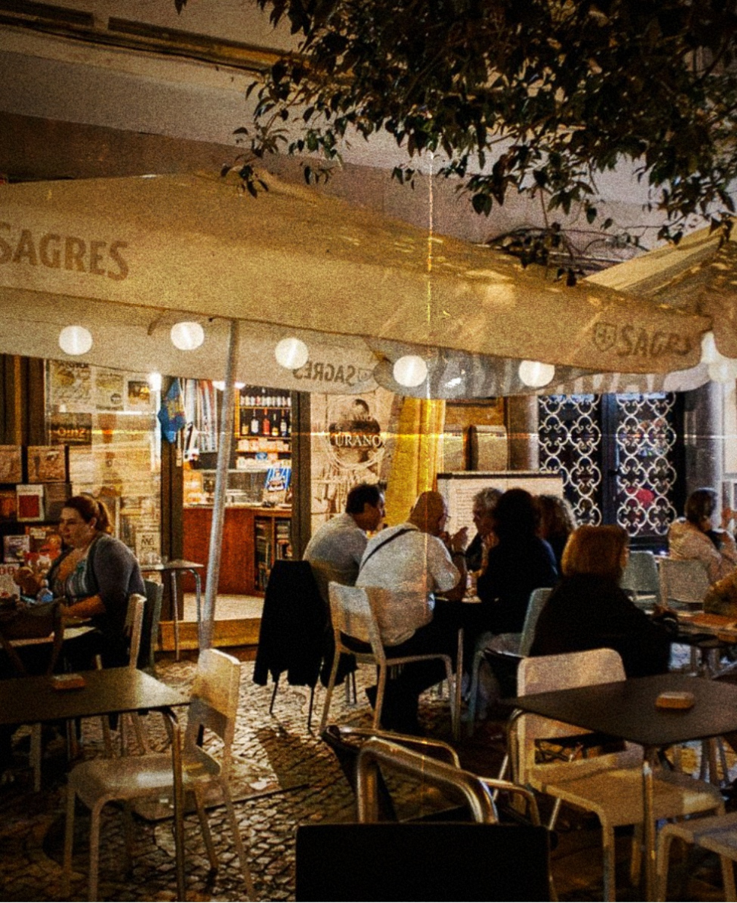
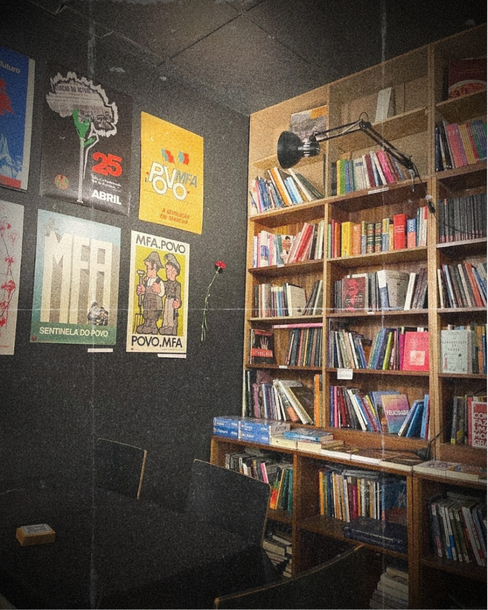

Restaurante
Cozinha de autor com raízes portuguesas, produto local e uma carta sazonal que se reinventa.
Um espaço que resiste
à definição — porque
está sempre a tornar‑se.


Um espaço entre
o livro e o copo.
O silêncio e o som.
01 — Conceito
A Meia Volta do Úrano nasceu do desejo de quebrar fronteiras entre disciplinas. É um restaurante onde se come bem, uma livraria onde se pensa em voz alta, um bar onde se brinda a ideias, uma galeria onde a obra respira. Tudo sob o mesmo tecto — e sob a mesma inquietação criativa.
Cada detalhe foi desenhado para prolongar o tempo: a luz baixa, o papel sobre as paredes, a conversa entre mesas, a música ao fundo. Um convite a dar meia volta ao quotidiano.
02 — Eventos
04 — Espaços
Cozinha de autor com raízes portuguesas, produto local e uma carta sazonal que se reinventa.
Edições cuidadas, autores lusófonos, obras de arte e catálogos raros — para folhear entre pratos.
Cafés de especialidade, pastelaria artesanal e doçaria conventual servidos de manhã à noite.
Vinhos naturais, cocktails de autor e destilados raros numa carta pensada como poesia líquida.
Exposições rotativas de artistas nacionais e internacionais. A obra muda. O espaço transforma‑se.
Rua das Artes, nº 14
Lisboa, Portugal
Ter — Sáb · 12h — 00h
Dom · 12h — 18h
Segunda encerrado
+351 912 345 678
reservas@meiavoltadeurano.pt